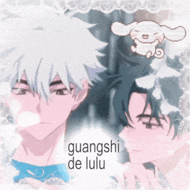

animanga (and the like)
series i loved

for more, check out my anilist!
i watched my first anime on 2022-02-27 at a sleepover with my friends. it was an anime movie called your name, and that really set my expectations high; the art and animation were stunning and as someone who loves romance, i ate that up. of course, i was unfortunately let down when i began watching other anime.
comics are something i got into later on. from what i remember, my first comic was heartstopper, a british coming-of-age, found-family gay romance webtoon! looking back, this is foreshadowing for my interest in BL... i began reading it on 2022-06-24 and.. it recently ended this year actually, and it's just.. amazing. i highly recommend it if you just want a heartwarming and beautiful story!!
my first manhwa (before i even knew what it was) was our secret alliance, which i finished reading on 2023-09-29. i think this is one of the series that reinforced the fact that i love romance.
when it comes to manga, i think my first one was oshi no ko, which i began reading on 2025-01-08, starting from after season 2 of the anime ended. i honestly don't really like this series - and especially after seeing how it ended.. yeah, if you've read the series, you'll know what i mean. i remember finishing it at like 3am on that day thinking, "what did i just read??"
i didn't know manhua was a thing until i began reading BL, but i think my first one was here u are, a BL manhua i finished on 2025-07-02. i read it on the webtoon app so it had korean names which was confusing when i ran out of chapters and had to read it with the chinese names LOL. i liked it at the time since i hadn't read many BLs, but now i think it's just meh.